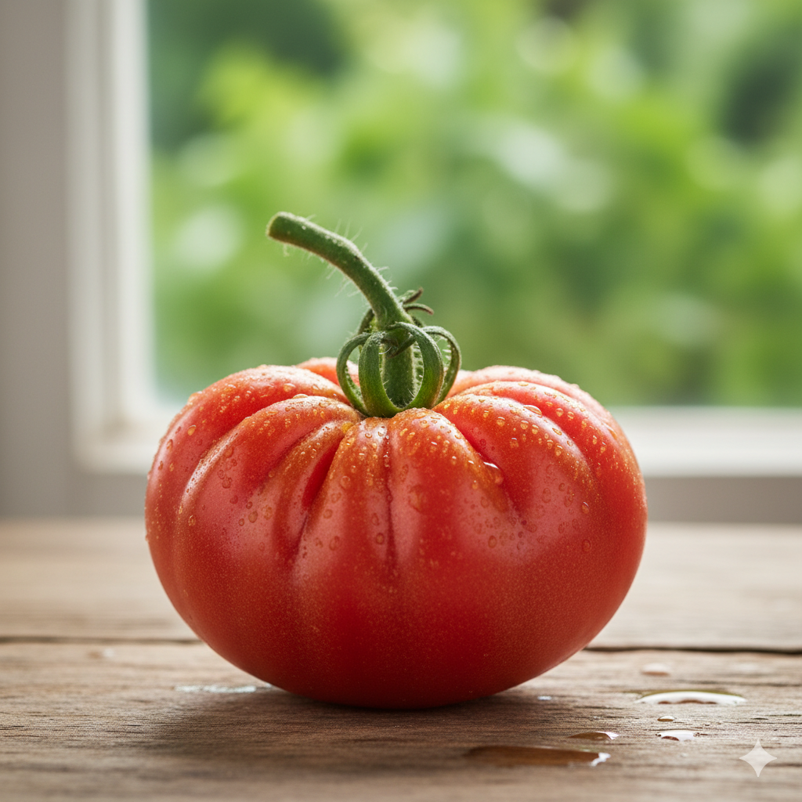
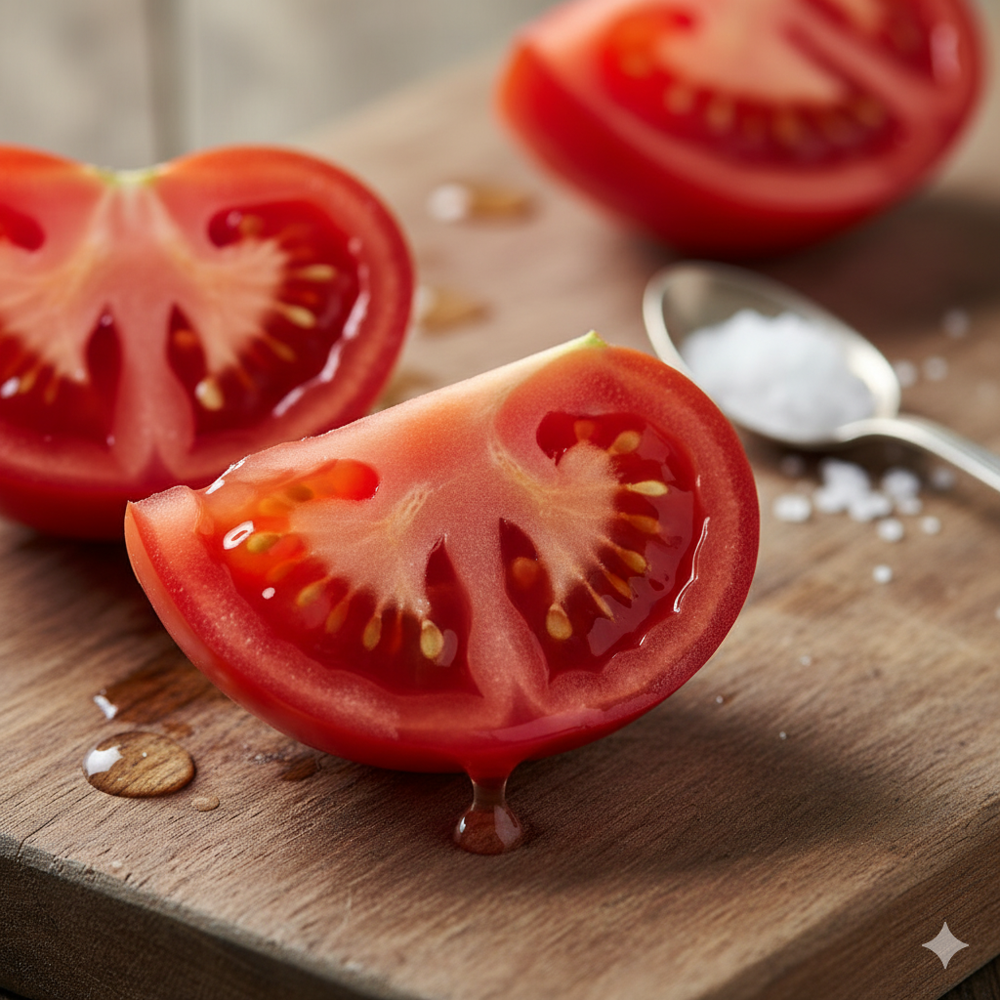
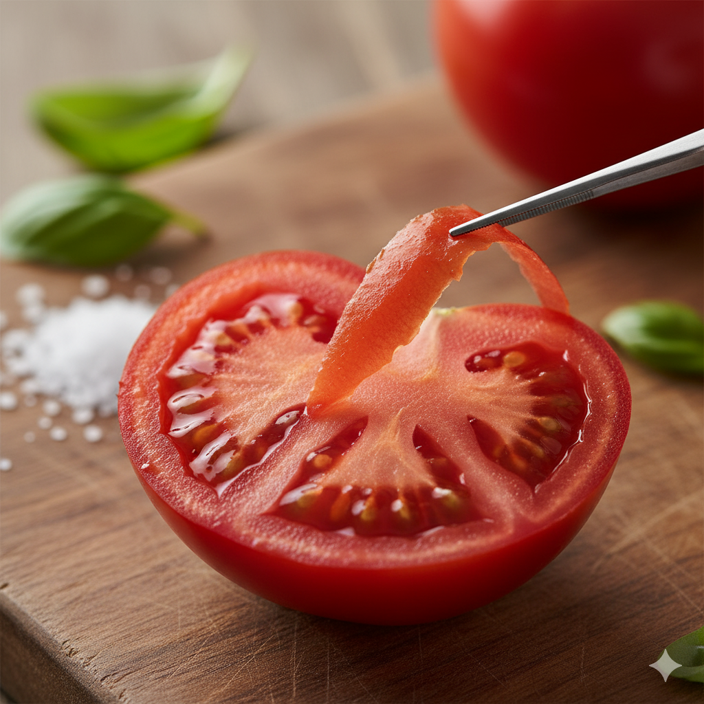
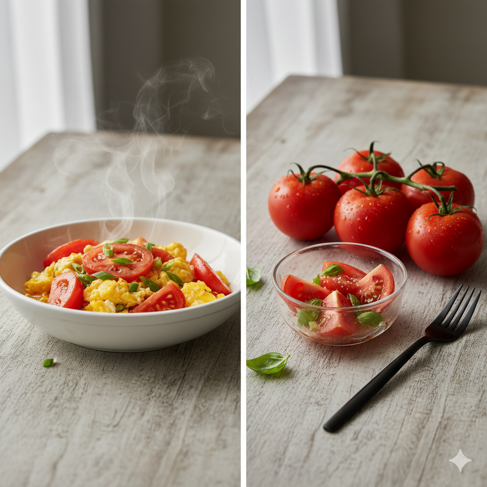

每一口，都是舌尖上的童年记忆

味道：唤醒尘封的味蕾
还记得小时候在田埂边，随手摘下一颗西红柿，一口咬下去那酸甜多汁、浓郁芬芳的味道吗？汴河农品的普罗旺斯西红柿，正是对那份纯粹味道的完美复刻。
它承载着记忆中的风味，每一口都汁水充盈，果香四溢，仿佛时光倒流，将您带回那个无忧无虑的夏天。


口感：皮薄多汁，细腻沙瓤
普罗旺斯西红柿以其卓越的口感而闻名。轻咬一口，薄如蝉翼的果皮几乎感受不到它的存在，紧接着是丰沛的汁液瞬间迸发，盈满口腔。
更令人惊喜的是，其独特的沙瓤质地，细腻无渣，入口即化，带来前所未有的满足感。无论是生食还是烹饪，都能展现其无与伦比的魅力。
亦蔬亦果：厨房与餐桌的百变明星
普罗旺斯西红柿，是餐桌上不可多得的百变食材。它既可以作为一道美味的蔬菜，烹饪出番茄炒蛋、番茄牛腩等经典菜肴，为佳肴增添一抹亮色和浓郁风味。
亦可作为健康美味的水果，洗净后直接生吃，清甜解渴，是夏日里最自然、最健康的零食。它的多功能性，让您的餐桌充满无限可能。
